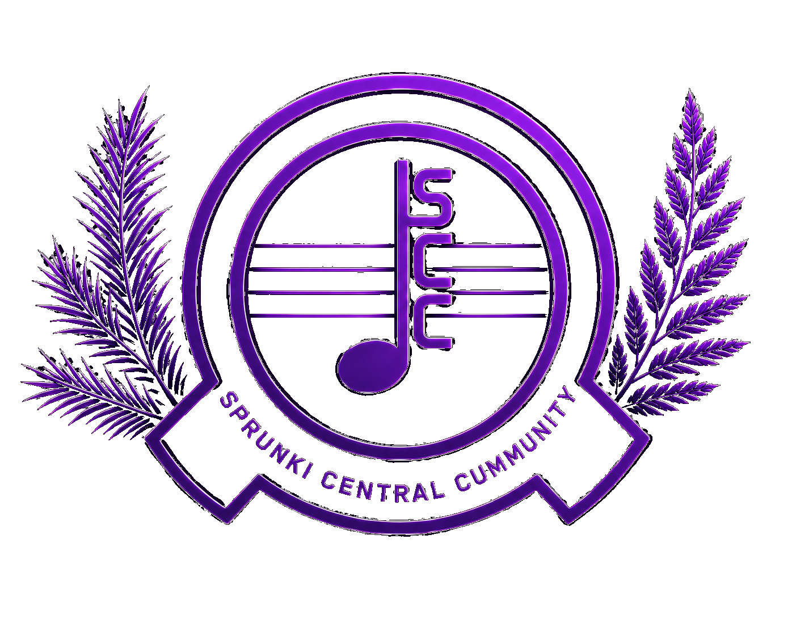

VERITY AI
درباره Verity
Verity دستیار هوشمند Sprunki Central Community است که برای راهنمایی کاربران، پاسخ به پرسشهای مربوط به SCC و کمک در گفتگو طراحی شده است.
بازگشت به چت Verity
SCCSPRUNKI CENTRAL COMMUNITYVERITY AI
Verity دستیار هوشمند Sprunki Central Community است که برای راهنمایی کاربران، پاسخ به پرسشهای مربوط به SCC و کمک در گفتگو طراحی شده است.
بازگشت به چت Verity